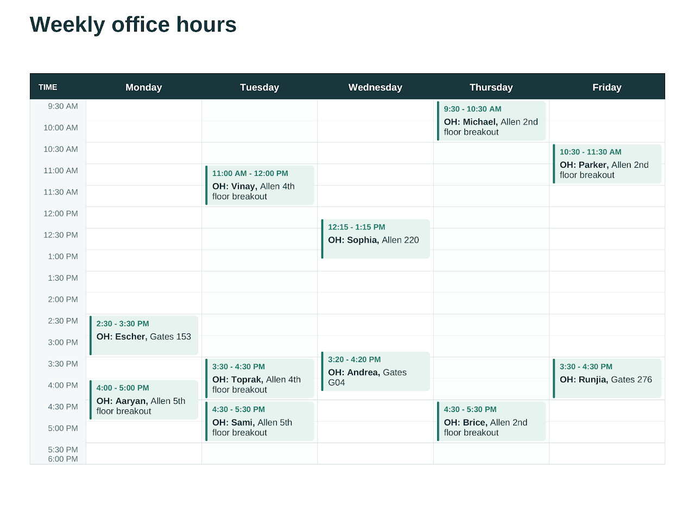

CSE 421: "Introduction to Algorithms" (Autumn 2026)
Welcome to the Autumn 2026 edition of CSE 421! See the links above for more information.
You can find office hour information in Course Staff or Calendar.
Course Description
The course introduces the design and theory of algorithms. Covers several algorithmic paradigms, including greedy algorithms, divide and conquer algorithms, linear programming, and dynamic programming through a series of optimization and graph problems. Explores techniques to identify and handle intractable problems, including the concepts of NP-hardness and NP-completeness.
This is a proof-based course that focuses on how different algorithms work, how to prove their correctness, and how to design an algorithm when given a new problem to solve. There is almost no coding (mostly algorithm design in pseudocode and proofs), and the emphasis is on conceptual understanding of common algorithms and tools to explain why algorithms are correct.
Prerequisites: CSE 312, 332. Math 208 is strongly encouraged.
Course Goals
The goal for the end of the course is that you will be able to:
Model word problems as computational problems.
Determine an appropriate algorithm design paradigm for a new problem.
Design an algorithm using a variety of algorithm-design paradigms (including greedy algorithms, divide and conquer, dynamic programming, flow modeling, and others).
Prove your algorithm produces the correct answer.
Reduce between a new problem and a known problem (for showing hardness or for reusing existing algorithms)
Identify and cope with computational problems that are infeasible.
Consider the implications of modeling decisions in the real world.
Logistics
Communication: on Ed Discussion. You should have received an invitation to join (let Andrea know if not).
Homework submissions: on Gradescope.
Lecture recordings: lectures will be recorded, and available on Canvas.
Office hours: info in Calendar or Course Staff.
Exams: there will be 1 midterm and 1 final. Date and location in Exams.
Grading
There will be 8 homeworks, 1 midterm, and 1 final. The grade for the class will be determined based on a weighted average of homeworks and exams as follows: 36% homeworks, 28% midterm, 36% final.
Other Resources
All of the required content for this class can be obtained from lectures and sections. However, the following optional textbook is great, and may provide another perspective: "Algorithm Design" by Jon Kleinberg and Éva Tardos, Addison-Wesley, 2006.
You can find some useful review material relating to CSE 332 here.
Here is a style guide for writing your solutions for this class. The style guide is a good fit for our course, except for the fact that it asks to describe algorithms in pseudocode. A clear English description is good enough and often preferred. You should describe your algorithm in any way you like (English or pseudocode) that lets you convey clearly all the steps of the algorithm.
This course is adapted from previous CSE 421 iterations by Robbie Weber and Chinmay Nirkhe, which you may also find useful.
Late submissions
You have 6 tokens for 24 hours late submission of homeworks, no questions asked (you may use up to 3 on each homework). After the 6 tokens are used, homeworks submitted up to 24 hours late are graded with a 50% penalty, and homeworks submitted after 24 hours will not be counted for credit. Extenuating cirumstances are of course separate, and should be discussed directly with Andrea.
Collaboration
Collaboration with other classmates is encouraged! However, we ask that you write up your solutions individually, and mention your collaborators at the start of your homework solutions.
Use of AI (and other external resources)
We will be following this policy for the use of AI. In summary, you can use AI or external resources to clarify concepts from class, or concepts that you are not familiar with, but you are not allowed to use AI or external resources to directly look for the answer to a homework question or to get assistance with a specific homework problem. We understand that when searching for general information you may accidentally find the exact question we asked. In such cases, we ask that you tell the staff, and provide a link to what you found (if you do so, this will not count as a violation of the policy).
If you are unsure about whether something is allowed, please feel free to ask Andrea.
Academic Integrity
The goal of our assignments is for you to fully understand and internalize the content of the course. Working through homework problems is an integral part of developing this understanding (I believe that there is no substitute to this for learning!). The policies above are designed for you to go through this crucial part of the learning process.
Not following these policies will likely detract from your learning, and it directly negatively affects other students who are following them, since grades are determined partly based on relative performance. Therefore, we take academic integrity seriously. We refer violations of departmental policies to the Office of Academic Affairs. If you are found responsible for a violation of academic integrity on a homework problem, you will receive a 0 on the relevant problem.
I understand that sometimes life can get in the way of spending as much time as you'd like to on assignments. I hope the 6 late tokens can help mitigate busy or stressful times. You should always feel free to reach out directly to Andrea for extra help on the class material (I'm available!), or if there are extenuating circumstances. We can figure something out.

Sections: Thursday at 11.30am, and then every hour until 3.30. Check MyUW for the section you are assigned to and its location (which is not the same for all sections!)
*The lecture and section material below is adapted from CSE 421 material by Robbie Weber and Chinmay Nirkhe.
*Slides were created in keynote. So the converted ppt file may have formatting issues.
Lectures
09/30: Logistics; stable matchings (slides: keynote, ppt, pdf)
10/02: More stable matchings (slides: keynote, ppt, pdf)
10/05: Graph traversal; Breadth-First Search (keynote, ppt, pdf)
10/07: BFS, DFS, and applications (bipartiteness testing) (keynote, ppt, pdf)
10/09: DFS and applications (cycle detection, topological sorting) (slides: keynote, ppt, pdf)
10/12: Graph modeling; Greedy algorithms (intro and interval scheduling) (slides: keynote, ppt, pdf)
10/14: Greedy graph algorithms (minimum spanning trees) (slides: keynote, ppt, pdf)
10/16: Greedy graph approximation algorithms (max cut) (slides: keynote, ppt, pdf)
10/19: Divide and Conquer (mergesort, 2D closest pair) (slides: keynote, ppt, pdf)
10/21: Divide and Conquer (runtimes, Strassen's matrix multiplication)
10/23: Divide and Conquer (Karatsuba's integer multiplication, median finding)
10/26: Divide and Conquer (median/selection finding)
10/28: Dynamic Programming (memoization, edit distance)
10/30: Dynamic Programming (edit distance, knapsack)
11/02: Dynamic Programming (Bellman-Ford)
11/04: Dynamic Programming (Bellman-Ford continued)
11/11: Max Flow and Min Cut (intro)
11/13: Max Flow and Min Cut (Ford-Fulkerson)
11/16: Max Flow and Min Cut (Ford-Fulkerson continued, and Max Flow-Min Cut theorem)
11/18: Max Flow and Min Cut (Faster algorithms, and applications)
11/20: Wrapping up Max Flow & Intro to P, NP, and reductions
11/23: NP-completeness
11/25: More NP-completeness
11/27: No class, Thanksgiving
11/30: More NP-completeness (3-SAT)
12/02: More NP-completeness (Vertex Cover and 3-coloring)
12/04: Linear Programming
12/07: Linear Programming (optimal solutions, and simplex method)
12/09: Linear Programming (simplex method continued, LP approximation of vertex cover)
Exams
Midterm: Monday Nov 9, 5.30-7.30pm, JHN 102 and JHN 075
Final: Monday Dec 14, 2.30-4.20pm, Gates G20 and Gates G01
Andrea Coladangelo
Instructor
email: coladan@cs.washington.edu
Office hours: Wednesday 3.20pm (Gates 371)
Vinay Pritamani
TA
email: vprita@cs.washington.edu
Office hours: Tuesday 11am (Allen 4th floor breakout)
Michael Whitmeyer
TA
email: mdwhit@cs.washington.edu
Office hours: Thursday 9.30am (Allen 2nd floor breakout)

Parker Vladimiroff
TA
email: pvladim@cs.washington.edu
Office hours: Friday 10.30am (Allen 2nd floor breakout)

Toprak Yildirim
TA
email: topbatu@cs.washington.edu
Office hours: Tuesday 3.30pm (Allen 4th floor breakout)
Sami Badal Khan
TA
email: skbk@cs.washington.edu
Office hours: Tuesday 4.30pm (Allen 5th floor breakout)
Aaryan Pawar
TA
email: aarynpwr@cs.washington.edu
Office hours: Monday 4pm (Allen 5th floor breakout)
Brice Liu
TA
email: briceliu@cs.washington.edu
Office hours: Thursday 4.30pm (Allen 2nd floor breakout)